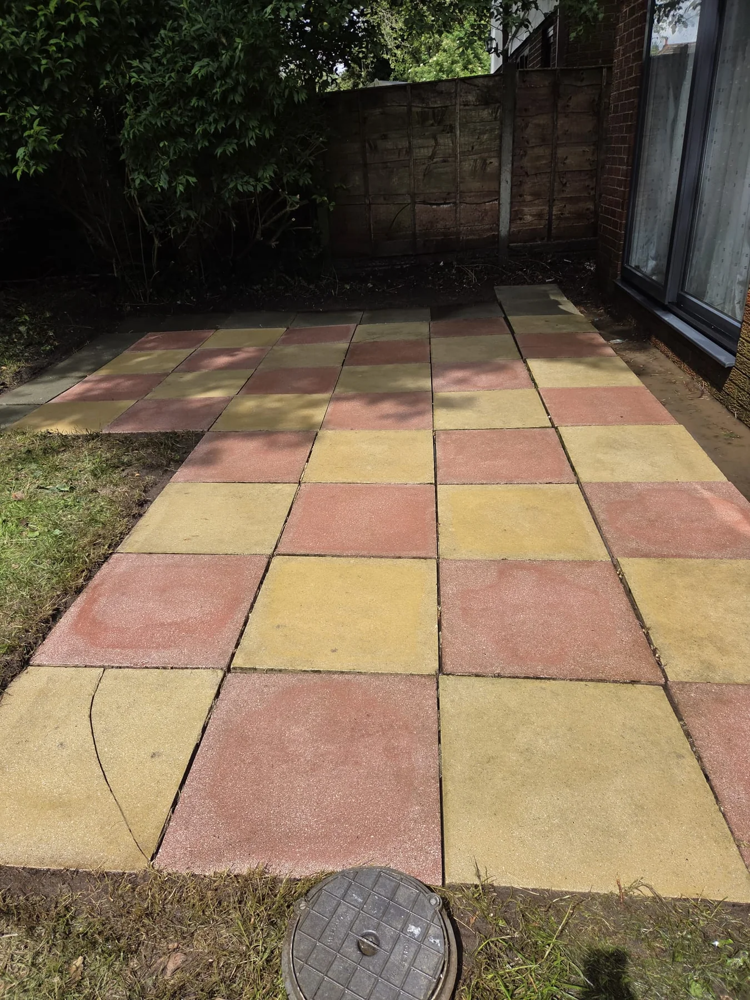
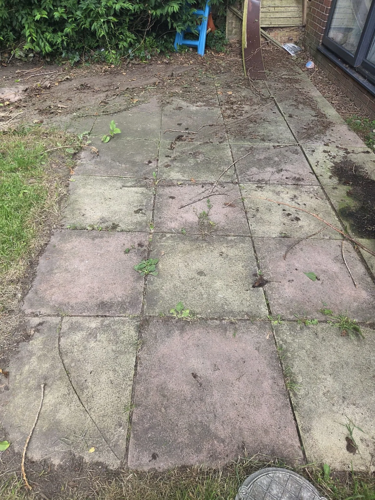

WhatsApp for a quote
WhatsApp for a quote


Driveways & block paving
Cut through built-up grime, algae and traffic film to reveal a brighter, cleaner and more consistent finish.
Get a quote →Driven by perfection
PRESTON & SURROUNDING LANCASHIRERestore the look of your property with professional pressure washing across Preston and surrounding Lancashire. Driveways, patios, paths, steps, block paving, decking and drain jet washing — handled with care and finished to the OCD standard.
Straightforward booking, clear communication and detail-focused cleaning designed to make your exterior spaces look cared for again.
Cut through built-up grime, algae and traffic film to reveal a brighter, cleaner and more consistent finish.
Get a quote →Restore colour and definition to patios and paths affected by weathering, dirt and organic growth.
See results →Refresh high-traffic steps and entrances for a sharper, cleaner first impression.
Book an estimate →Controlled exterior cleaning for decking and outdoor areas, with the method matched to the surface.
Ask about your job →High-pressure drain jetting to help clear stubborn build-up and restore flow in domestic external drain lines.
Ask about drain jetting →Choose the closest match below, then send your postcode and a few photos. We will confirm the package and agree your fixed quote before work begins.
Send a few photos and we will confirm the right package and fixed price.
Ideal for a doorstep, small entrance or a few exterior steps.
For a small patio or path area up to approximately 20 m².
For a single-car driveway up to approximately 25 m².
A complete refresh for block paving up to approximately 25 m².
Cleaning and colour treatment for up to five standard fence panels.
For one standard, accessible domestic external drain.
Introductory guide prices. Heavy growth, difficult access, specialist treatments and unusual surfaces may cost more. Your confirmed quotation is agreed before work begins. Offers and discounts cannot be combined.
Drag the divider to compare each result yourself. After three seconds without interaction, the automatic before-and-after slideshow resumes.


Professional exterior cleaning across Preston and surrounding Lancashire. Send your postcode and a few photos for a fast availability check and a clear quote.
Send photos and your postcode on WhatsApp for the quickest quote, or call us directly to discuss the job.